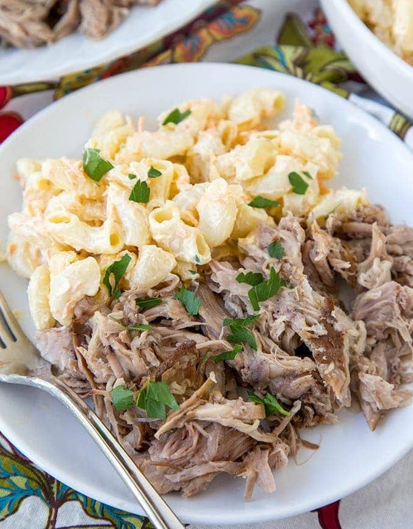

Delicious Kalua Pork

Description
Planning a luau-themed party? This Kalua pork is the perfect main dish for your get-together.
It will feed a crowd, it's easy to prepare, and everyone loves it.
Ingredients
- 1 boneless pork shoulder roast (5 to 6 pounds)
- 1 tablespoon liquid smoke
- 4 teaspoons sea salt (preferably Hawaiian red sea salt)
- Hot cooked rice, optional
Instructions
- Pierce pork with a fork; rub with liquid smoke and salt.
Place pork in a 6-qt. slow cooker.
Cook, covered, on low, 8-10 hours or until pork is tender.
- Remove roast; shred with 2 forks.
Strain cooking juices; skim fat.
Return pork to slow cooker. Stir in enough cooking juices to moisten; heat through.
If desired, serve with rice.